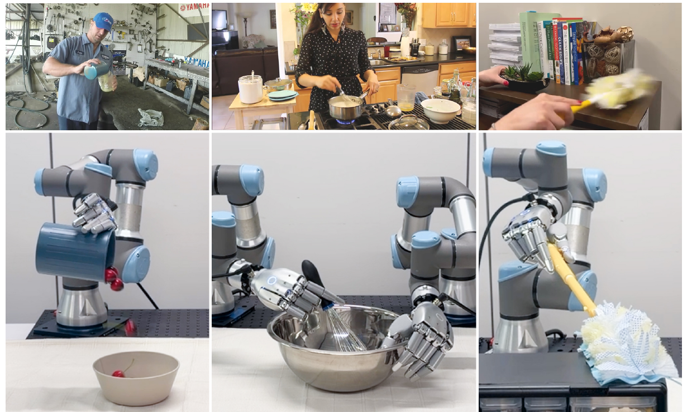
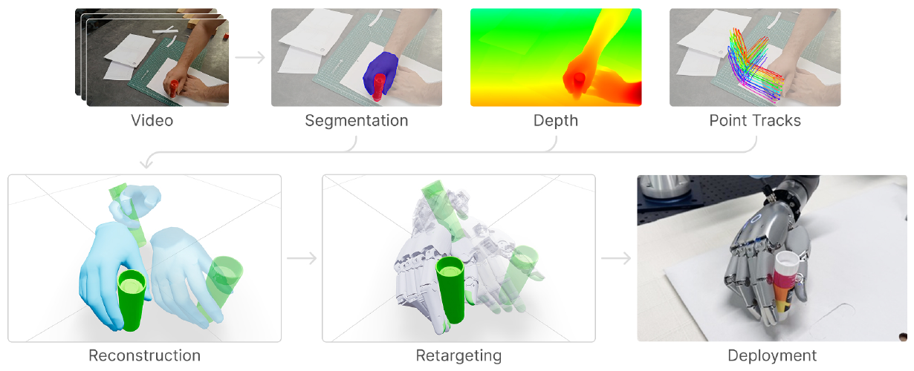
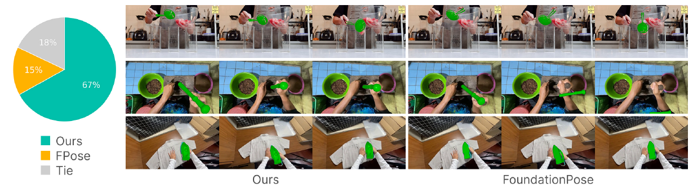
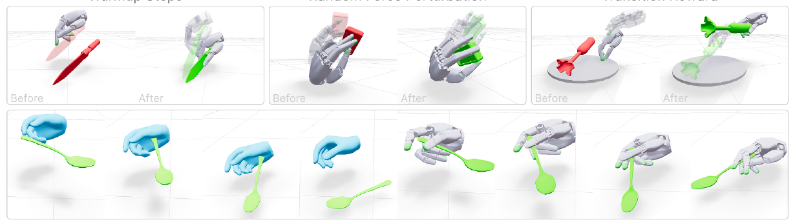
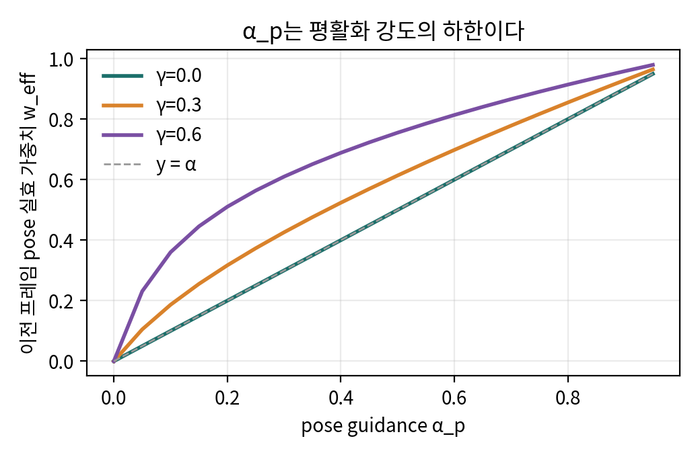
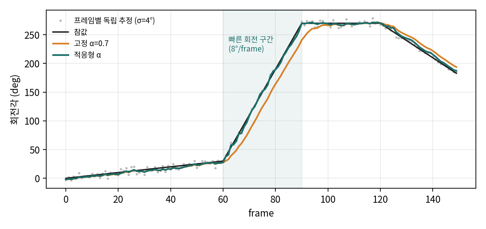

논문 Fig. 1: 일상 영상(위)에서 로봇 실행 궤적(아래)을 얻는다.

논문 Fig. 2: 파이프라인 개요. 영상 → 분할, 깊이, 점 추적 → 복원 → 리타겟팅 → 배포.
824591b, 2026-08-02) · 프로젝트 https://do-as-i-do.comFast-SAM3D, sam-3d-objects)한 줄 요약: 단안 RGB로 찍은 일상 영상(인터넷, egocentric, 생성 영상) 한 편에서 손과 강체 물체의 4D 궤적을 복원하고, MuJoCo Warp 위에서 sampling 기반 MPC로 22-DoF 로봇손(Sharpa Wave) 궤적으로 리타겟팅한 뒤, 실제 UR3e 양팔 로봇에서 재생하는 파이프라인입니다.
논문이 내세우는 기여는 네 가지입니다.
비디오 ─┬─ SAM 3 분할(물체: 클릭, 손: 텍스트) ─┐
├─ MoGe-2 pointmap + intrinsics ───────┤
├─ HaWoR 손 메쉬(MANO) ─────────────────┤
├─ GeoCalib 중력 방향 ──────────────────┤
└─ BootsTAPIR 2D point track → 회전 속도 ┤
▼
기준 프레임에서 SAM 3D 메쉬 생성(x̄s 고정) → guided flow matching으로 프레임별 pose 추적
→ N=25 후보 클러스터링 → 손 기준 metric 정렬(최소제곱) → 4D hand-object 궤적
▼
mink 운동학 IK(사람손 → Sharpa) → MPPI식 annealed sampling MPC (MuJoCo Warp, 1024 샘플)
+ Warmup / Perturbation / Transition Reward → 로봇 궤적 → UR3e+Sharpa IK → 실제 재생(50 Hz, 약 0.5배속)
문제: SAM 3D[11]는 단일 이미지와 마스크를 받아 p_θ(x^s, x^p | c), 즉 형상(shape) latent와 자세(pose) latent의 결합분포에서 샘플을 뽑습니다. 프레임마다 독립적으로 돌리면 메쉬가 매번 달라지고 pose도 시간적으로 일관되지 않습니다.
핵심 아이디어 (Eq. 1): shape와 pose가 같은 latent 공간에서 함께 생성된다는 점을 이용합니다. flow matching ODE를 Euler로 적분할 때 매 스텝마다 블록별로 다음 blending을 적용합니다.
x_t^s = (1-α_s)(x_{t-Δ}^s + Δ v_θ^s) + α_s · [(1-t) ε^s + t · x̄^s] # shape: 기준 프레임 형상 쪽으로
x_t^p = (1-α_p)(x_{t-Δ}^p + Δ v_θ^p) + α_p · [(1-t) ε^p + t · x^p_{k-1}] # pose: 이전 프레임 자세 쪽으로
--guidance_strength 1)이면 shape 블록은 매 스텝 정확히 "x̄^s를 같은 노이즈로 보간한 점"으로 치환됩니다. RePaint[65]나 Song et al.[66]의 imputation과 같은 replacement 방식 조건부 생성입니다.03_derivations.md §1에서 유도했습니다. 결론은 마지막 스텝의 출력이 정확히 (1-α_p)·(네트워크 x1-예측) + α_p·(이전 pose) 라는 것이고, 프레임 단위로 보면 지수이동평균(EMA) 필터입니다.적응형 α_p (부록 A): 연속한 두 프레임에서 마스크 안 20개 점을 BootsTAPIR[67]로 추적하고, SVD로 2D 강체변환을 맞춰 평면 내 회전량 Δθ_k를 구합니다. 그다음 α_p(k) = max(0.1, 0.7 − 0.09·|Δθ_k|)로 둡니다. 코드상 단위는 deg/frame이며 논문 본문에는 단위가 적혀 있지 않습니다. 따라서 6.7°/frame 이상에서 하한 0.1에 걸립니다.
후보 선택: 프레임마다 N=25개 pose를 샘플링하고 가중 SE(3) 거리 w_t‖t_i−t_j‖ + w_r·geodesic(q_i,q_j)로 계층 군집화합니다. 작은 클러스터는 버리고 남은 후보를 마스크 IoU로 고릅니다. 정석은 pose 조건부 로그우도(Eq. 2, instantaneous change of variables)로 순위를 매기는 것이지만, 논문 계산으로는 프레임당 약 8.7k번의 forward+backward가 필요해(N·T·(1+D_p) = 25·25·14) 사용하지 않았습니다.
손-물체 정렬 (부록 A, Fig. 8): HaWoR 손 스케일을 near-metric 기준으로 삼습니다. 프레임마다 다음을 계산합니다.
그다음 물체 회전은 고정한 채 카메라 광선 방향의 스칼라 s 하나를 1차원 최소제곱 s* = tᵀ(obj_target − c_mesh)/tᵀt로 풉니다. 마지막으로 GeoCalib[68]로 중력 방향을 맞춥니다.
기반은 SPIDER[15]입니다. MPPI 계열 sampling 최적화에서 노이즈 커널을 반복(iteration)과 예측 구간(horizon) 양쪽으로 annealing합니다. 설정값은 부록 Table 4에 있습니다.
여기에 세 가지를 더했습니다.
| 구성 요소 | 해결하려는 실패 | 방식 |
|---|---|---|
| Warmup | 잡음 낀 첫 프레임에서 시작하면 복구가 불가능하고, annealing 특성상 초반 H 스텝은 탐색이 덜 됨 | 레퍼런스 앞에 H(=3 s) 스텝을 덧붙이고, 이 동안 물체를 weld로 공중에 고정한 채 손만 자유롭게 움직임. warmup이 끝나면 weld를 해제함 |
| Random Force Perturbation | 손끝 위에 아슬아슬하게 올려두는 식의 불안정한 국소해 | 롤아웃 중 물체에 무작위 힘·토크를 가하고, 후보마다 K=4개 교란 시드에서 보상을 평균함 (기댓값 기준의 강건화) |
| Transition Reward | 잡음이 낀 추적 보상만으로는 잡기와 놓기 같은 계단형 사건을 유도하기 어려움 | 레퍼런스상 in-hand 구간에서 손-물체 접촉이 없거나, rest 구간에서 물체-바닥 접촉이 없으면 상수 페널티를 줌 |
부록 B에는 본문에 없는 실무 요령도 적혀 있습니다. 이전 계획과 새 레퍼런스를 보간으로 이어 붙이는 reference blending, 운동학 IK를 여러 초기값으로 돌리는 방법, 비스듬히 놓인 물체용 바닥 "plate"(pedestal), 메쉬를 2 mm 두껍게 하고 팽창시키는 처리, CoACD 볼록 분해입니다.

논문 Fig. 5: in-the-wild 150편에 대한 사람 선호도 평가(Ours 67%), FoundationPose와의 정성 비교.
| DexYCB F-5 / F-10 / CD | HOI4D F-5 / F-10 / CD | |
|---|---|---|
| G-HOP | 0.31 / 0.49 / 8.11 | 0.69 / 0.91 / 0.63 |
| FoundationPose (같은 파이프라인에 끼워 넣음) | 0.69 / 0.89 / 0.89 | 0.71 / 0.91 / 0.49 |
| Any6D (같은 파이프라인에 끼워 넣음) | 0.69 / 0.88 / 0.97 | 0.71 / 0.91 / 0.50 |
| Ours | 0.71 / 0.93 / 0.66 | 0.72 / 0.91 / 0.49 |

논문 Fig. 4: Warmup, Perturbation, Transition Reward가 해결하는 실패 유형.
| 방법 | 복원 레퍼런스 655개: 성공 / Pos / Rot | OakInk2 1,352개: 성공 / Pos / Rot |
|---|---|---|
| Annealed Sampling (SPIDER) | 0.25 / 0.08 / 0.40 | 0.72 / 0.08 / 0.32 |
| + Warmup | 0.66 / 0.06 / 0.28 | 0.77 / 0.06 / 0.25 |
| + Perturbation | 0.67 / 0.06 / 0.30 | 0.79 / 0.03 / 0.14 |
| + Transition Reward | 0.71 / 0.05 / 0.28 | 0.81 / 0.03 / 0.15 |
성공 기준은 평균 위치 오차 < 0.1 m이고 평균 회전 오차 < 0.5 rad입니다(SPIDER, ManipTrans, DexMachina 관례).
04_code_verification.md §3).강체만 다룹니다. 단안 metric depth에 의존하고, 접촉과 가림을 구분하지 못합니다(깊이 모호성). 장면 전체가 아니라 손과 물체만 복원하므로 장애물이나 관절형 물체를 다루지 못합니다. 시뮬레이터와 실제 사이의 간극도 남아 있습니다.
03 §1.2). 빠른 동작에서는 하한 0.1로 풀리지만, 회전 없이 빠르게 병진하는 동작에서는 Δθ≈0이라 강하게 평활화됩니다. translation 속도는 α_p에 반영되지 않습니다.--scale 0.1808 같은 수동 입력이 들어갑니다. SAM 3 물체 분할도 클릭 GUI로 합니다. 따라서 "scalable"이라는 표현이 아직 완전 자동화를 뜻하지는 않습니다.논문에 명시되지 않았지만 코드와 수식에서 직접 따라 나오는 성질을 정리했습니다. 수치 확인은 analysis/guidance_toy.py로 했고(CPU, 약 1초), 결과는 analysis/guidance_toy_results.json에 있습니다.
_prepare_t_and_d는 t_seq = linspace(0, 1, steps+1)이고, reversed_timestamp=False가 기본값입니다(HF pipeline.yaml 값은 가중치 접근 권한이 필요해 직접 확인하지 못했지만, blending 식 자체가 t=1을 데이터로 가정하고 있습니다).x̂_t = x_{t'} + Δ·v(x_{t'}, t')
= x_{t'} + (1−t')·v (Δ = 1−t')
= x̂_1(x_{t'}) ← 네트워크의 x1-예측 그 자체
blending: z_ref(1) = (1−1)ε + 1·x_ref = x_ref
x_1 = (1−α)·x̂_1 + α·x_ref (★)
결론: 노이즈 ε와 적분 경로, Taylor cache 근사(Fast-SAM3D)와 상관없이, 최종 pose latent는 "마지막 스텝의 네트워크 예측"과 "이전 프레임 pose" 사이의 볼록결합입니다. α_s = 1이면 shape는 정확히 x̄^s로 끝납니다.
_POSE_LATENT_KEYS) 비선형·상태 의존 velocity를 200번 무작위로 뽑아 확인했습니다. 최대 절대오차는 0.0이었습니다.(★)의 x̂_1 자체도 앞선 24번의 blending으로 x_ref 쪽으로 끌려간 상태 x_{t'}를 입력받아 계산됩니다. 그래서 네트워크 예측이 현재 상태에 의존하는 정도(γ)만큼 이전 pose의 실효 가중치 w_eff가 α보다 커집니다.
toy 모델은 x̂_1 = (1−γ)·y_obs + γ·(x_t에서 외삽한 x_1)이고, T=25입니다.
| α_p | γ=0 | γ=0.3 | γ=0.6 |
|---|---|---|---|
| 0.1 | 0.10 | 0.19 | 0.36 |
| 0.5 | 0.50 | 0.61 | 0.76 |
| 0.7 | 0.70 | 0.78 | 0.87 |

함의: 논문 Table 5의 "고정 α_p"(코드 기본값 0.5)는 실제로는 그보다 강한 평활화입니다. SAM 3D 백본이 현재 latent에 얼마나 의존하는지(γ)는 모델 고유의 성질이므로, 같은 α_p라도 물체나 장면에 따라 평활화 강도가 달라집니다.
프레임 k의 출력을 pose_k라 하면 pose_k ≈ (1−w_k)·obs_k + w_k·pose_{k−1}입니다. 1차 저역통과(EMA) 필터이고, 정상상태 지연은 약 w/(1−w) 프레임입니다. 예를 들어 w=0.78이면 약 3.5프레임입니다.
적응형 규칙 α_p = max(0.1, 0.7 − 0.09|Δθ|)는 "움직임이 빠르면 평활화를 줄인다"는 규칙입니다. HCI 분야의 One-Euro 필터(Casiez, Roussel, Vogel, CHI 2012, "1€ Filter")가 속도에 따라 차단 주파수를 올리는 것과 같은 구조입니다. 논문은 이 연결을 언급하지 않았습니다.
toy 실험 조건은 1D 회전, 프레임별 독립 추정 잡음 σ=4°, 0.5→8→0→−3 °/frame 구간입니다.
| 방식 | 전체 RMSE (°) | 빠른 구간 RMSE | 빠른 구간 최대 지연 | 지터 |
|---|---|---|---|---|
| 가이던스 없음 (α=0) | 3.99 | 3.65 | 7.8 | 5.98 |
| 고정 α=0.5 | 6.28 | 12.27 | 16.3 | 1.91 |
| 고정 α=0.7 | 12.75 | 25.13 | 30.5 | 1.50 |
| 적응형 α | 2.93 | 3.73 | 7.5 | 2.04 |

해석: 고정 α는 지터를 줄이는 대가로 빠른 구간에서 큰 지연을 만듭니다. 적응형 α는 정지 구간에서는 평활화하고 빠른 구간에서는 풀어 주므로 두 장점을 함께 얻습니다. 이 결과는 Table 5에서 적응형이 고정보다 나았던 이유를 정성적으로 설명합니다.
주의: 이 toy 실험은 가우시안 잡음만 넣었고, SAM 3D 특유의 이상치(대칭 물체의 180° 플립)는 모델링하지 않았습니다. 플립은 N=25 클러스터링이 담당합니다.
pose_target만 바꾸면 되므로 구현 비용이 낮습니다.논문은 이 최적화기를 "MPPI-style, kernel annealed across iterations and horizon"이라고만 설명합니다. 코드(retargeting/utils/sampling.py)가 실제로 하는 일은 다음과 같습니다.
보상 R_i = −‖W ⊙ Δqpos‖₂ − 1e−4‖Δqvel‖ − 3000·max(pen − 5mm, 0)² − 0.5·𝟙[전이 불일치] (+ terminal ×10)
가중치: 상위 10% (elite 102개)만 남기고, 그 안에서 z-정규화 후 softmax(·/T), T = 1.0
업데이트: ctrl ← Σ w_i · ctrl_i
노이즈: 반복 i에서 global scale = β^i, β = 0.01^(1/32) → 마지막 반복에 1% 수준
horizon 방향으로는 첫 knot 1.0배에서 마지막 knot 4.0배까지 증가 (DIAL-MPC 계열 annealing)
조기 종료: 개선량 < 0.01 이 2회 연속이면 중단
교란: 후보 1개당 K=4개 교란 시드의 평균 보상 (worst-case가 아니라 기댓값)
opt_steps = [2,13,2,8,2,2,6,2,9,2,6,2,2,2,2,2]).malik-group/do-as-i-do @ 824591b, 서브모듈 malik-group/Fast-SAM3D @ 823d478, malik-group/sam-3d-objects (shallow clone)| 논문 | 구현 위치 | 일치 여부 |
|---|---|---|
| Eq. 1 shape/pose blending | Fast-SAM3D/track_object.py:796-818 (batched_guided_sample_sparse_structure) |
✅ 식과 정확히 일치합니다. z_ref = (1-t)·noise + t·target, x = (1-α)·x_next + α·z_ref |
| α_s ∈ [0.9, 1] | run_pipeline.sh: --guidance_strength 1 |
✅ |
| 적응형 α_p = max(0.1, 0.7 − 0.09|Δθ|) | track_object.py:1676 lambda, --pg_floor/--pg_ceil/--pg_slope |
✅ 단위는 deg/frame입니다(논문에는 단위가 없음) |
| BootsTAPIR 20점 + SVD 2D 강체 | reconstruction/scripts/tapir_velocity_tracking.py (--num-points 20, np.linalg.svd) |
✅ |
| D_p = 13 | _POSE_LATENT_KEYS = 6drotation_normalized(6) + translation(3) + scale(3) + translation_scale(1) |
✅ 논문 부록 수치와 일치합니다 |
| N = 25 후보, T = 25 Euler | --num_pose_samples 25 --euler_steps 25 |
✅ |
| 가중 SE(3) 거리로 클러스터링 | _pose_distance, cluster_pose_candidates (average linkage, dist_thresh 0.3, min_size 3, w_rot 1.5) |
⚠️ 아래 D2 참조 |
| 로그우도 선택 (Eq. 2) | pose_log_likelihood.py, --pose_selection pose_log_likelihood |
✅ 비교용으로 구현되어 있습니다 |
| 손-물체 정렬 최소제곱 | reconstruction/scripts/optimize_translation_scale.py |
✅ 구조 일치(세부 줄 단위 대조는 생략) |
| Warmup H 스텝 + weld | retargeting/utils/io.py:101-120 (프레임 0 복제를 앞에 추가), config.py warmup_*, mjwp.set_weld_active |
✅ 다만 본문에 없는 부가 장치가 있습니다(D4) |
| Random force perturbation | sampling.py:make_rollout_fn (N×K worlds, K = 4, 평균) |
✅ 다만 gate가 있습니다(D5) |
| Transition reward | mjwp._rest_surface_penalty (in-hand 구간에 손 접촉 없음 / rest 구간에 표면 접촉 없음 → 상수 페널티) |
✅ 의미는 같습니다. 다만 공개 설정은 pedestal 버전입니다(D6) |
| Table 4 하이퍼파라미터 | config/override/do_as_i_do.yaml |
✅ 수치가 전부 일치합니다(num_samples 1024, sim_dt 0.005, ctrl_dt 0.5, horizon 3.0, knot_dt 0.2, 노이즈 스케일, 보상 스케일, 교란 파라미터) |
| # | 내용 | 영향 |
|---|---|---|
| D1 | Post-optimization이 기본으로 켜져 있습니다 (--post_optimize). 최종 선택된 pose를 SAM 3D의 layout post-optimization(렌더 실루엣 정렬, shape ICP는 끔)으로 한 번 더 다듬습니다. 본문 Method에는 언급이 없습니다. |
Table 2 수치에 이 단계가 포함됐는지 논문만 보고는 알 수 없습니다. 추적기 자체의 기여를 해석할 때 주의해야 합니다. |
| D2 | 클러스터 순위 기준이 다릅니다. 논문은 "작은 클러스터를 버리고 나머지를 silhouette IoU로 순위"라고 설명합니다. 코드는 (클러스터 크기, 평균 점수) 순으로 정렬해서 가장 큰 클러스터를 고르고, 그 안에서 render IoU가 가장 높은 후보를 고릅니다. | 실질적으로는 "다수결 → IoU" 순서입니다. 모드를 찾는다는 논리와는 오히려 더 잘 맞습니다. |
| D3 | 회전 거리를 논문은 2·arccos⟨q_i, q_j⟩로 썼지만, 코드는 scipy (r_a⁻¹ r_b).magnitude()를 씁니다. |
코드가 맞습니다. 논문 식은 절댓값이 빠져 있어서 q와 −q(같은 회전)를 2π만큼 떨어진 것으로 계산합니다. 논문 표기상의 실수입니다. |
| D4 | Warmup에 본문에 없는 장치가 붙어 있습니다. 시작할 때 손가락을 펴고(finger qpos = 0), 손바닥 법선 방향으로 침투가 없어질 때까지 손목을 물린 뒤 10 cm 여유를 더합니다(warmup_min_clearance 0.1). 손목·물체와 손가락 레퍼런스를 3 s 동안 보간하고(warmup_ref_*_interp_duration), warmup 구간 보상에는 0.1을 곱합니다(warmup_rew_multiplier). |
논문은 "grasp 휴리스틱을 쓰지 않는다"고 강조합니다. 그러나 "펼친 손으로 접근"하는 사전 설정은 약한 휴리스틱입니다. Warmup의 +41%p에 이 장치들이 얼마나 기여했는지는 분리되지 않았습니다. |
| D5 | 교란은 in-hand 구간에서만, 그리고 그 경계에서 0.5 s 안쪽으로 깎인(erode) 구간에서만 가해집니다(perturb_gate_lag_duration). warmup 중에는 꺼집니다. |
본문에는 "rollout에 무작위 힘"이라고만 적혀 있습니다. gate가 없으면 잡기·놓기 순간에 교란이 들어가서 성능이 떨어질 수 있으므로, gate는 재현할 때 중요한 디테일입니다. |
| D6 | 공개 설정은 pedestal_penalty_scale: 0.5, floor_penalty_scale: 0입니다. 논문은 "object-floor contact"라고 설명하지만 실제로는 물체 밑에 붙인 pedestal(plate)과의 접촉을 봅니다. |
의미는 같습니다(부록 B의 Object Base와 연결됩니다). |
| D7 | 최적화 temperature는 1.0이고, softmax는 상위 10% 후보에만 적용합니다(_compute_weights_impl). 논문은 "MPPI-style"이라고만 적었습니다. |
03_derivations.md §4 참조 |
| D8 | IK 단계(solve_ik)는 기본값 ref_dt=0.02로 실행되어 trajectory_kinematic.npz의 frequency=50이 기록됩니다. 실제 레퍼런스는 HaWoR 약 30 FPS이고 물리 단계는 ref_dt 0.0333을 씁니다. |
물리 단계 시간축은 맞습니다. IK 단계의 qvel 레퍼런스만 1.67배 크게 계산되지만, vel_rew_scale = 1e-4라서 영향은 미미합니다. 메타데이터 버그에 가깝습니다. |
| D9 | Fast-SAM3D의 Taylor cache(--enable_ss_cache, stride 3)와 torch_compile로 속도를 높였습니다. 일부 Euler 스텝의 velocity는 네트워크로 계산하지 않고 외삽합니다. |
논문은 Fast-SAM3D를 언급하지 않습니다. 정확도가 얼마나 떨어지는지 보고되지 않았습니다. 다만 §1.1의 항등식은 v의 출처와 무관하게 성립합니다. |
| D10 | 추적은 기준 프레임에서 양방향(backward, forward)으로 진행합니다. --chain_on_diffusion이 켜져 있어서, 다음 프레임 target으로는 post-opt 이전의 확산 출력 pose를 씁니다. |
post-opt의 보정이 다음 프레임으로 전파되지 않습니다. 확산 latent 공간 안에서 일관성을 유지하려는 선택으로 보입니다. |
retargeting/outputs/sharpa/right/whisking/0/의 trajectory_mjwp.npz(실행된 궤적)와 trajectory_kinematic.npz(레퍼런스)를 비교했습니다. 레퍼런스 시간축은 30 Hz이고 warmup 3 s만큼 이동시켰습니다. 스크립트는 analysis/whisk_tracking_check.py입니다.
| 지표 | 값 | 기준 |
|---|---|---|
| 평균 물체 위치 오차 | 0.038 m (최대 0.140) | < 0.1 ✅ |
| 평균 물체 회전 오차 | 0.283 rad (최대 1.387) | < 0.5 ✅ |
| 물체 높이(z) 범위 | 레퍼런스 0.087–0.228 m, 시뮬레이션 0.087–0.132 m | 성공 기준으로는 잡히지 않는 차이 |
| 반복 횟수 | 16개 제어 스텝 중 10개가 2회 반복에서 조기 종료 | 상한 32 |
해석: 데모는 논문의 성공 기준을 통과합니다. 그러나 레퍼런스에서 물체를 약 14 cm 들어 올리는 구간을, 시뮬레이션에서는 약 4.5 cm만 들어 올립니다. "평균 오차 < 10 cm"라는 기준은 이런 차이를 잡아내지 못합니다. 실제로 쓸 때는 구간별 최대 오차나 높이 같은 과제 특화 지표를 함께 봐야 합니다.
번호 [n]은 논문의 참고문헌 번호입니다. arXiv ID는 논문 참고문헌 목록에 적힌 값을 그대로 옮겼습니다. 이 문서의 각 논문을 별도로 열어 내용을 검증하지는 않았습니다.
[고전] MIT copy-demo(1970) [3] → Kang & Ikeuchi 1997 [4] → Efros et al. "Do as I do" 2003 [5]
│
[RGB-D/3D 스캔 가정] DexMV 2022 [6] ─ 물체 3D 스캔, pick-place
│
[특수 장비 가정] EgoZero [9], Dexterity from Smart Lenses [8] ─ 스마트글래스 depth, 손 keypoint
│
[단안 RGB + 파운데이션 모델 + 물리 리타겟팅] ← 2025–2026 주류
H2Sim2Robot [16] LiDAR 스캔 + FoundationPose → RL (데이터: 직접 촬영)
VideoManip [18] MeshyAI + FoundationPose → DRO + DP3 (직접 촬영 + egocentric)
DexMan [22] TRELLIS + FPose + SpaTrack → RL (직접 촬영 + 생성 영상)
DexImit [7] SAM 3D + FPose++ → motion planning (직접 촬영 + 생성 영상)
★ Do as I Do SAM 3D + guided diffusion 추적 → sampling 최적화 (직접 촬영 + 생성 + egocentric + 인터넷)
차별점 요약: 다른 방법들은 모두 물체 추적에 FoundationPose 계열(모델 기반 6-DoF 추적기)을 씁니다. Do as I Do는 추적까지 생성 모델(SAM 3D) 로 처리하고, 리타겟팅은 RL이나 휴리스틱 대신 RL 학습이 필요 없는 sampling 최적화로 처리합니다.
| 역할 | 논문 | 이 논문에서의 쓰임 |
|---|---|---|
| 이미지 → 3D 물체 (shape + pose 결합 생성) | SAM 3D [11], arXiv:2511.16624 | 메쉬 생성, 그리고 guided 추적의 백본 |
| 가속 | Fast-SAM3D (wlfeng0509/Fast-SAM3D, 논문에는 미인용) | Taylor cache로 sparse-structure 단계 가속 |
| 분할 | SAM 3 [64], arXiv:2511.16719 | 물체(클릭)와 손(텍스트) 비디오 분할 |
| 단안 기하 | MoGe-2 [10], arXiv:2507.02546 | pointmap과 intrinsics. SAM 3D가 MoGe pointmap으로 학습됐기 때문에 같은 것을 사용 |
| 손 | HaWoR [45] (CVPR 2025) | world-space MANO 손 궤적. 스케일 기준으로 사용 |
| 점 추적 | BootsTAP/BootsTAPIR [67], arXiv:2402.00847 | 회전 속도 → 적응형 α_p |
| 중력 | GeoCalib [68] (ECCV 2024) | 궤적의 중력 정렬 |
| 6-DoF 추적 베이스라인 | FoundationPose [17] arXiv:2312.08344, Any6D [47] | 비교 대상(같은 파이프라인에 끼워 넣어 비교) |
| Flow matching 이론 | Lipman et al. [77] arXiv:2210.02747 | Eq. 2 로그우도(instantaneous change of variables) |
| Replacement 가이던스 | RePaint [65] arXiv:2201.09865, Score SDE [66] arXiv:2011.13456 | Eq. 1 blending의 근거 |
| 물리 리타겟팅 | SPIDER [15] arXiv:2511.09484 | 바로 위 베이스라인. annealed sampling의 틀 |
| RL 리타겟팅 | ManipTrans [59] arXiv:2503.21860, DexMachina [60] arXiv:2505.24853, Dexplore [61] | 성공 기준(E_pos < 0.1, E_rot < 0.5) 관례 |
| 운동학 IK | mink [55] | 사람손 → 로봇손 초기 레퍼런스, 로봇팔 IK |
| 도메인 랜덤화 | OpenAI Rubik's cube [69] arXiv:1910.07113, Rudin et al. [70] arXiv:2109.11978 | 교란(perturbation) 아이디어의 출처 |
| 데이터 | DexYCB [71], HOI4D [72], OakInk2 [73] arXiv:2403.19417, 100DOH [76] | 평가와 필터링 분석 |
| 주제 | 관련성 | 근거 수준 |
|---|---|---|
| DIAL-MPC (Xue et al., 2024, "Full-Order Sampling-Based MPC for Torque-Level Locomotion Control via Diffusion-Style Annealing") | 코드 주석에 "One DIAL-MPC optimization step"이라고 적혀 있습니다. 반복 방향과 horizon 방향으로 노이즈를 annealing하는 방식이 DIAL-MPC 계열입니다. SPIDER를 거쳐 계승된 것으로 보입니다. | 코드 주석으로 확인. 논문 본문에는 미인용 |
| One-Euro filter (Casiez et al., CHI 2012) | 적응형 α_p와 구조가 같습니다(03 §1.3). |
내 해석 |
| Kalman / α-β 필터 | EMA의 지연 문제를 상수속도 예측으로 없애는 고전적 해법입니다. | 내 해석. 개선 아이디어 (b) |
| RePaint의 resampling, DPS 등 posterior 샘플링 계열 | replacement 방식 조건부 생성의 편향을 줄이는 방법들입니다. | 내 해석. 03 §2 |
| EgoDex [75] arXiv:2505.11709 | 대규모 egocentric 손 데이터입니다. 논문은 필터링 동기 부분에서만 인용합니다. 이 파이프라인의 입력 소스로 바로 쓸 수 있습니다. | 논문 인용 |
한계: 3절의 DIAL-MPC 서지 정보는 내 사전 지식에 근거합니다. 블로그나 git에 올리기 전에 arXiv ID를 직접 확인해야 합니다.